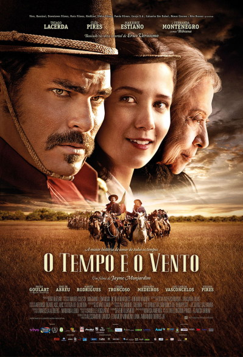

Um ex-atirador da Marinha, agora fazendeiro do Arizona, precisa ganhar a vida para evitar um despejo. Mas, boa parte de suas concepções muda quando ele encontra dois imigrantes ilegais, mãe e filho, que precisam de ajuda.
"Na Mira do Perigo é um drama de ação que se inspira fortemente na obra de Clint Eastwood, mas esquece de seguir seus próprios passos. O que sobra é um "faroeste" moderno interessante, mas com muitos clichês em sua trama, que não consegue se destacar entre tantos exemplares semelhantes no gênero. Ainda assim, o filme mostra como Liam Neeson é um ator talentoso, mesmo com pouco material, e apresenta cenas de ação eficientes."
>
>